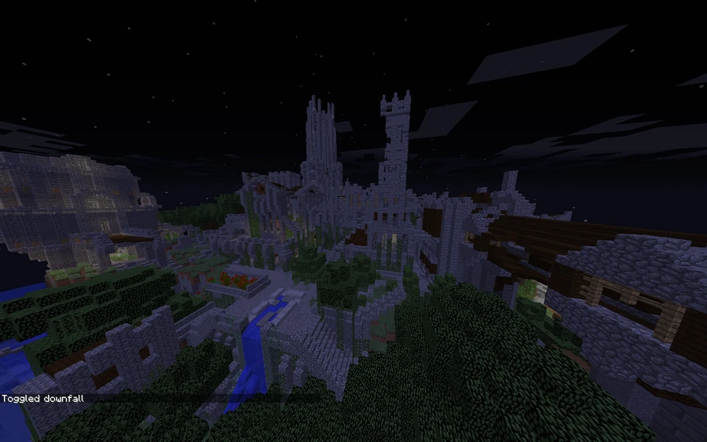
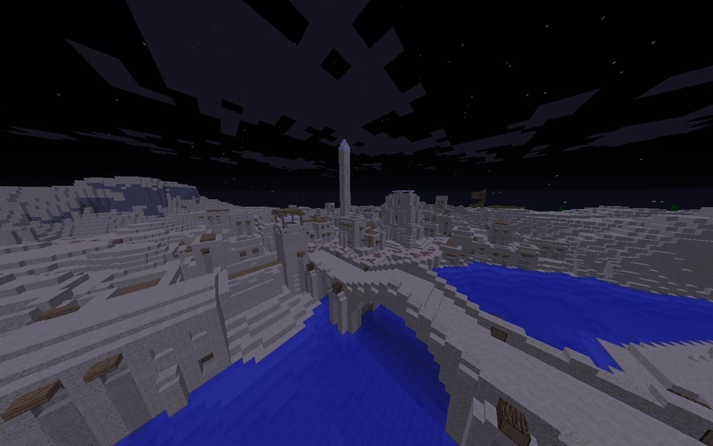
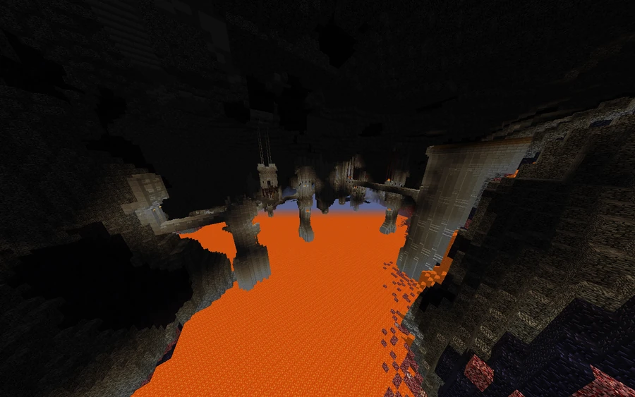

Ancient Peoples of Broville
The desert, jungle, Brolapagos and mountains preserve traces of distinct communities. This overview brings together what is known about them.
Traces on the mainland
Broville contains traces of distinct communities, without a shared chronology establishing their origins, periods or relationships. The Egyptian civilization, in the west of the map, is known for its monumental complex and burial objects. Its architecture recalls ancient Egypt, although the available historical records are limited. The reference point for a visit is −3140, 70, 2300.
The diary of the explorer Digby describes stairways and skulls belonging to the Alkali clan in the jungle. That investigation has its own sources and does not identify the clan as part of the Egyptian civilization.



The northern castle
The ruined castle, northwest of the city, is another ancient complex, placed by community documentation at −1419, 80, 912. Its appearance is compared to English castles, an architectural interpretation rather than evidence of English historical origins. Heraldus's expedition begins nearby, and its search continues beneath the swamps.
Islands and mountains
Bembe Coto's testament attributes the destruction of a Brolapagos island community to the religious mission. In the mountains, the tradition of the Dwarven Society is linked to the Arkenstone.
The dwarven settlement is described as lying inside a volcano among snowy hills. Its tunnels and structures extend for hundreds of blocks. The entrance identified as safest is at −360, 88, 3167. The visiting description preserves more information about the site's physical extent than about its history.
Gallery






See also
Sources and references
- v11.4.4 maps, signs, books and items World records
- Ancient Civilizations · Broville Wiki Community archive
Text adapted and expanded from Ancient Civilizations (contributors and history, revision 5106). Adapted text is available under CC BY-SA 3.0.